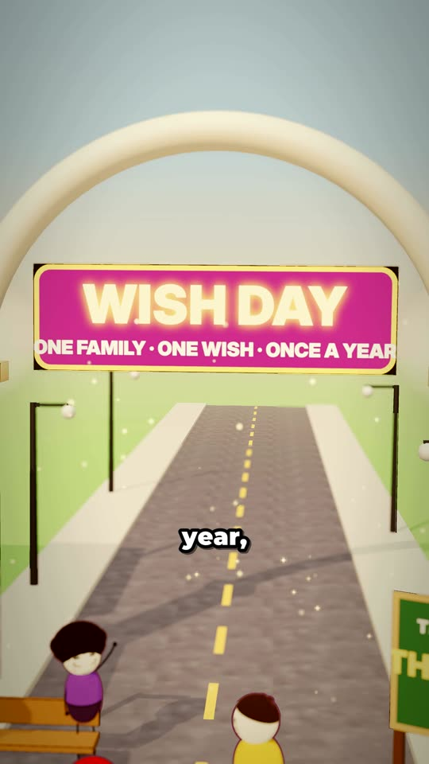
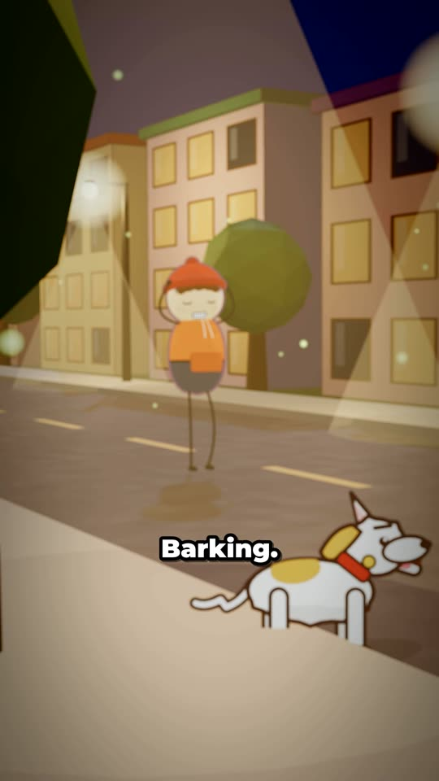
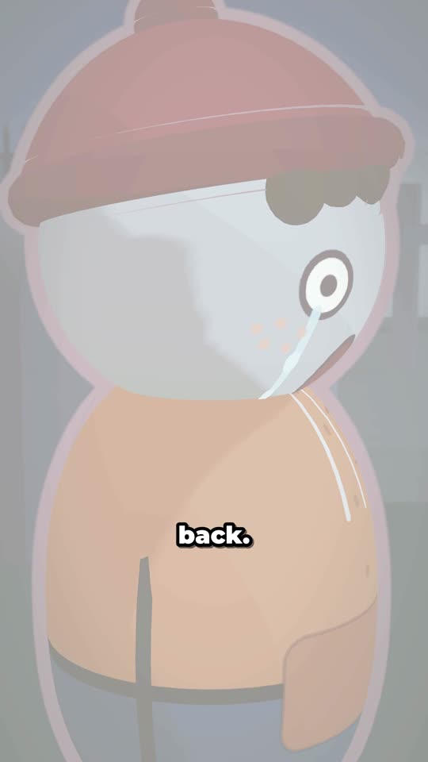
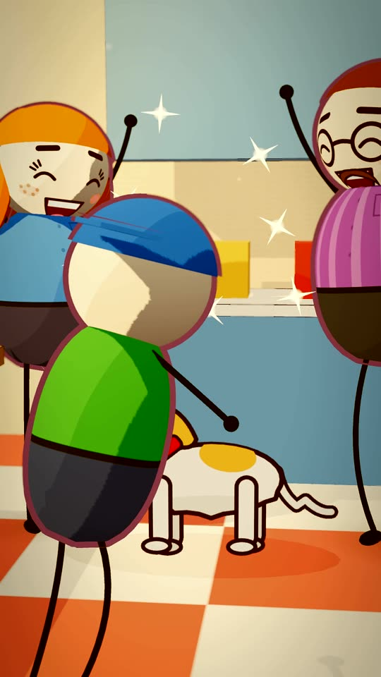
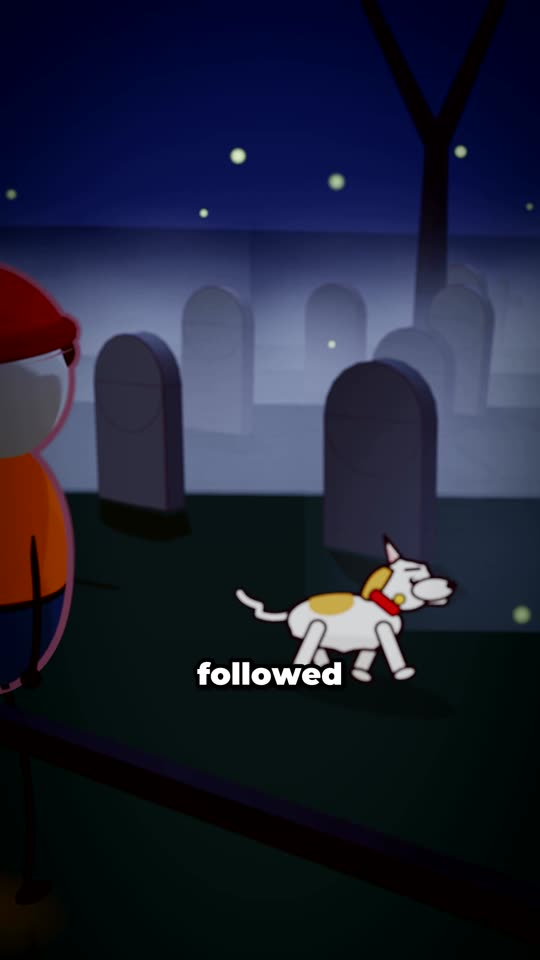
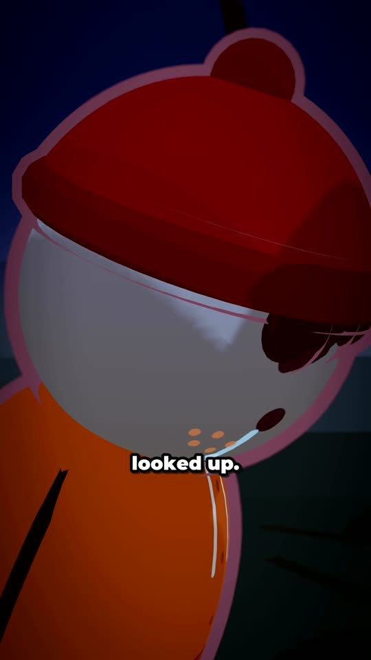
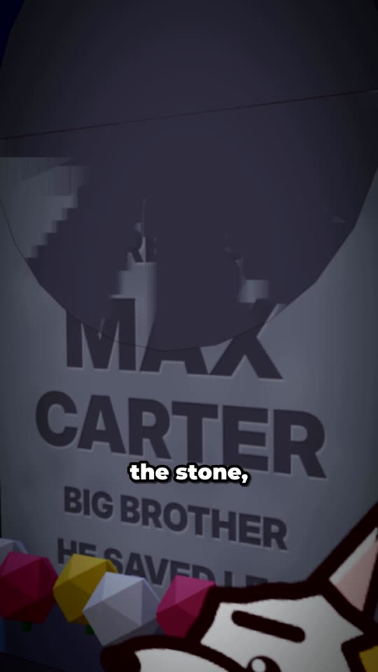
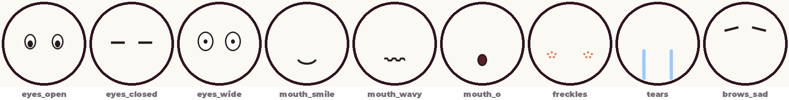
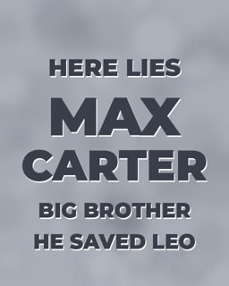
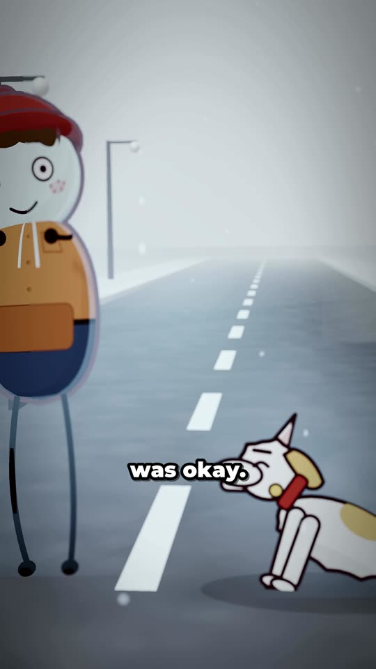

The exercise
This is the clip you'll rebuild, cut from the finished video with the narration only (no music). Watch it a few times with the sound on, then once frame by frame.
The narration for the exercise: animate to this, exactly like the real video.
Both files, the face parts and the stone textures are also saved in your GitHub repo at wish/docs/blender-guide/, so you can download them any time.
You'll work through it in the order a real production goes: set up, build the look, build the character and set, then cameras, acting, render and edit. Tick each part off as you finish it; your progress is remembered in this browser.
Budget your time
| Part | What you make | First time |
|---|---|---|
| Setup, look, outlines | A test scene with one perfect toon ball | 1–2 evenings |
| Max | The character, with swappable face parts and a simple rig | 2–3 evenings |
| Cemetery | Ground, stones, fence, moon, fog, fireflies | 2 evenings |
| Cameras, acting | The three shots, timed to the voice | 2–3 evenings |
| Render, edit | The finished 8-second clip with captions | 1 evening |
Free tools to install
| Tool | Used for | Notes |
|---|---|---|
| Blender 4.2 LTS or newer | Everything 3D: characters, sets, cameras, render | blender.org. This guide uses EEVEE, Blender's fast real-time renderer. |
| Krita | Drawing face parts, textures, the dog | krita.org. Any drawing app that saves transparent PNGs works. |
| Audacity | Cleaning and pitching the voice, loudness | audacityteam.org |
| DaVinci Resolve or CapCut | Final edit, captions, music | Both free. Blender's own Video Editor also works. |
| Montserrat font | Captions (Montserrat Black) | fonts.google.com/specimen/Montserrat. Also in your repo at wish/fonts/. |
| Rhubarb Lip Sync (optional) | Works out mouth shapes from a voice file | Free, open source; has a Blender add-on. |
The voice, after your subscription
Max's voice came from Chatterbox, a free open-source text-to-speech model (by Resemble AI) that runs on your own computer; it's fastest with an NVIDIA graphics card. The settings were exaggeration 0.65, cfg 0.35, temperature 0.8. Each line was then sped up 1.1× and pitched up 2 semitones to sound younger. You can do the same to your own recorded voice in Audacity:
- Record each line separately, in a quiet room, close to the mic.
- Effect › Pitch and Tempo › Change Tempo: 10% faster.
- Effect › Pitch and Tempo › Change Pitch: up 2 semitones.
- Effect › Volume and Compression › Loudness Normalization: −16 LUFS per line; the final mix goes to −14.
What makes the look
The style is a mix of flat cartoon characters and simple 3D sets, rendered so everything looks hand-inked. It comes down to eight ingredients. Learn to spot them, because every scene you make uses all eight.
Two-tone toon shading
Each colour has one lit tone and one shadow tone, with a hard edge between them. No soft gradients.
Plum outlines
Every object has a thick line of #301420, never pure black.
Simple, chunky shapes
Egg body, ball head, stick limbs. Sets are boxes and cylinders, slightly crooked.
Drawn faces
Eyes, brows and mouths are flat drawings swapped per emotion, like a puppet.
Depth of field + bloom
The background goes soft; lights and moons glow.
Air in the scene
Floating dust, fireflies or mist in every shot, and fog on the distance.
The camera never stops
Every shot slowly drifts or pushes in. Shake only happens on big hits like barks.
Big two-word captions
White Montserrat Black with a thick black outline, 1–2 words at a time, 70% down the screen.
Max, piece by piece
- Pom-pom: a small UV sphere on top.
- Beanie: the top half of a sphere plus a fat torus for the band, red #d0392f.
- Fringe: a row of squashed brown spheres #6b3f22 poking out under the band.
- Eyes: drawn PNG on a small plane in front of the face. Swap the drawing to change emotion.
- Freckles: another PNG decal, always on.
- Mouth: PNG decal, several versions (smile, wavy, o).
- Head: a UV sphere in warm white #fbf9f4. Its toon shading is the grey crescent on the right.
- Hoodie: an egg-shaped sphere in orange #e8732e; the strings are thin curves.
- Pocket: a flattened rounded box in #c95a22; the jeans are the bottom of the egg in #3a4a6a.
- Outline: plum shell around every part. The soft pink halo around it is bloom from the compositor.
- Arms: thin dark curves ending in a ball hand. Rubber-hose style, no elbows.
- Legs: the same stick curves. Bend them by moving the middle point.
The same rules in every scene




Break the scene down first
Professionals never animate straight from a script. They first turn the voice into a frame-accurate plan. Here is the plan for your scene: three shots, the frame each word lands on, and what happens when. Frame 1 is the start of the voice file.
| Shot | Frames | Line | Camera | Acting |
|---|---|---|---|---|
| A · Follow | 1–38 | “So I followed him.” | Over-the-shoulder, tracks with Max through the gate | Max walks, worried; Icey trots ahead |
| B · Kneel | 39–142 | “We reached the grave, and before I could even read it, I broke down crying.” | Low side view, slow push in | Walks in, kneels on “read” (f 80–87), hands to face, tears on “broke” (f 102) |
| C1 · Look up | 143–165 | “Then I looked up.” | Close side view of his face | Head lifts on “looked”, eyes go wide, mouth “o” |
| C2 · Stone | 166–205 | “And the name on the stone…” | His point of view on the stone, drifting closer | Engraving fades in from blank (f 171–203) |
| C3 · Mine | 206–237 | “…was mine.” | Closer still on MAX CARTER | White flash + impact sound on “mine.” (f 208) |



Set up the project
- Open Blender, choose General, delete the default cube (X). Save as
grave-reveal.blendin a new folder, and copy the voice mp3 and thekitfolder next to it. - Set the values in the sheet below. The colour setting matters most: Blender's default (AgX) washes cartoon colours out.
- Bring in the voice: switch an area to the Video Sequencer, Add › Sound, pick
grave-reveal-voice.mp3, and make sure it starts at frame 1. - In the Timeline: Playback › Sync › Sync to Audio and tick Scrubbing, so you hear the voice while dragging the playhead.
- Add a marker for every word that matters: put the playhead on the frame, press M, then F2 to name it. Use the frames from the timeline above: “followed” 16, “reached” 45, “read” 88, “broke” 105, “looked” 153, “name” 177, “mine.” 208.
Output Properties
- Resolution X
- 1080
- Resolution Y
- 1920
- Frame Rate
- 30
- Frame Start / End
- 1 / 237
- File Format
- PNG, RGB, 8-bit
Render Properties
- Render Engine
- EEVEE
- Color Management › View
- Standard
- Look
- None
- Film › Filter Size
- 1.50 px
- Motion Blur
- Off
Toon shading and outlines
Build this on a test sphere first (Add › Mesh › UV Sphere, right-click › Shade Smooth) with one Sun light. Once it looks right, you'll copy the material to everything.
The toon material
In the Shading workspace, select the sphere, click New and delete the Principled BSDF. Build this chain (Shift+A adds nodes):
- Shader to RGB turns lighting into a plain number, and the Color Ramp set to Constant snaps it into two flat tones. Shadow tone = the lit colour about 25% darker and slightly redder.
- The rim branch is optional: it adds a thin glow on the silhouette. Use pale blue at night and warm yellow by day. For Max in the cemetery it's what separates him from the dark.
- Plugging the Mix result straight into the Surface socket makes Blender treat it as emission, which is what we want.
- Shader to RGB only works in EEVEE, not Cycles.
The plum outline (inverted hull)
Every object gets a second, slightly bigger copy of itself, turned inside out and painted plum. From the camera you only see the rim of it peeking out, which reads as an ink line.
- Make a material named Ink: delete the BSDF, add an Emission node, colour
#301420, strength 1. - In Material › Settings, tick Backface Culling (in 4.2+: Camera).
- Add Ink as the object's second material slot.
- Add the modifier below.
Modifier › Generate › Solidify
- Thickness
- 0.02 m (Max) · 0.03 m (sets)
- Offset
- 1
- Normals › Flip
- On
- Materials › Material Offset
- 1
- Even Thickness
- On
Build Max
Max is made of simple shapes, so this goes faster than it looks. Use the sizes below as a start and adjust by eye against the anatomy picture. Give every part the toon group with its colour, plus the Ink outline.
| Part | How to make it | Size / position (Z = height) | Colour |
|---|---|---|---|
| Body (hoodie + jeans) | UV Sphere, scale it into an egg. Split the colour with a second material on the bottom faces. | radius 0.27 · scale Z 1.6 · Z 0.82 | #e8732e / #3a4a6a |
| Head | UV Sphere, Shade Smooth | radius 0.30 · Z 1.40 | #fbf9f4 |
| Beanie | Sphere with the bottom half deleted + Torus band + small sphere pom | dome r 0.31 · band Z 1.55 · pom Z 1.82 | #d0392f |
| Fringe | 5–6 small squashed spheres under the band | r 0.06–0.08 | #6b3f22 |
| Cube, Bevel modifier, flattened onto the belly | 0.36 × 0.05 × 0.17 | #c95a22 | |
| Arms, legs | Add › Curve › Bezier; Object Data › Geometry › Bevel › Depth gives a round tube | depth 0.016 · legs 0.42 long | #1e1418 |
| Hands, feet | Small UV Spheres at the curve ends | r 0.035 | #1e1418 |
The face: drawn parts you swap

kit/ in your repo), drawn on 512 px transparent cards. Draw your own in Krita the same way.- File › Import › Images as Planes (in 4.2+ also Add › Image › Mesh Plane). Pick
eyes_open.png. Set its material to Emission or Shadeless so the drawing keeps its exact colours. - Place the plane just in front of the head, at about the head's size, and parent it to the head (Ctrl+P › Object).
- To make it hug the curve of the head, add a Subdivision Surface modifier then a Shrinkwrap modifier, Target = Head, Offset 0.004.
- Repeat for every part. Stack all versions of the same part (three eyes, three mouths) in exactly the same place.
- To switch expression, hide all but one version. In Object Properties › Visibility, hover over Show in › Renders (and the eye icon in the Outliner) and press I to keyframe it on and off.
A simple rig, no bones needed
- Add an Empty › Plain Axes named
Max_rootat the floor between his feet. Parent everything to it. Moving it moves Max. - Add an Empty
Max_headat the neck. Parent the head, beanie, fringe and face to it. Rotating it nods and tilts the head. - For each arm and leg curve: in Edit Mode select the end point, Ctrl+H › Hook to New Object. Do the same for the middle point (elbow or knee). Now you pose a limb by moving two empties.
- Kneeling: move the knee hooks forward and down to about Z 0.1, the feet back, and lower
Max_rootso the body sits at a hip height of about 0.42 m.
Build the cemetery
This plan is to scale and uses the same numbers as the real scene. Keep it open while you build.
- Ground: a big Plane, 200 m, toon colour #2f4a36.
- Gravestones: a slab 0.7 × 0.18 m, 0.7–1.1 m tall, with a half-cylinder (r 0.35) on top. Every fourth is a thin cross instead. Rows every 2.6 m starting at Y 2, stones every 2 m from X −6, every other row shifted 0.6 m. Tilt each a few degrees so it doesn't look computer-made. Colours #9aa0aa and #7a808a.
- Max's stone at (0.2, 4.6): slab 1.1 × 0.22 × 1.3 m, half-cylinder r 0.55 on top, base 1.4 × 0.6 × 0.12 m. Leave a gap in the row around it.
- Flowers: six low-poly Icospheres (r 0.09) on the base in white, pink #f26a8a and yellow #ffd84a.
- Fence along Y −3.2: bars 0.04 m every 0.35 m, 1.4 m tall, leaving a gate gap from X −1.2 to 1.2; two rails at 0.3 and 1.2 m; stone gate posts 0.3 m square. An Array modifier makes the bars in one go.
- Trees: 3–4 bare trees from Cylinders, behind the stones.
The engraving that fades in

- Give the front face of Max's stone its own material (Edit Mode, select the face, Assign).
- Add two Image Textures:
kit/stone_blank.pngandkit/stone_engraved.png, into a Mix Color node (Mix) → your toon group. - Keyframe the Mix Factor: 0 at frame 171, 1 at frame 203. Hover over the field and press I.
Moonlight, fog and fireflies
Lights
- World colour
- #18224a · strength 0.6
- Moon (Sun light)
- #9ab4ff · strength 2.5
- Moon direction
- from high back-left (−8, 12, 14) towards the stone
- Shadow › Soft
- Angle 2°
- Crying glow (Point)
- #9ab8ff · 30 W at (0.2, 3.6, 1.5), on in shot B
- Moon disc
- Circle r 4.5 at (−8, 60, 16), Emission #fff4d0 · 3
Fog & particles
- World › Volume
- Principled Volume
- Volume colour
- #1a2244
- Volume density
- 0.015 (raise until the back rows fade)
- Fireflies emitter
- Plane 14 × 17 m, at Z 0.4–2.6
- Particles
- 60 · Start −200 · Lifetime 1000
- Render As
- Object: Icosphere r 0.03, Emission #dcff8c · 8
- Physics
- Brownian 0.15 · Field Weights › Gravity 0
Icey, hand-drawn in 3D

In the film Icey is a 2D drawing standing in the 3D world, redrawn every frame. Blender's Grease Pencil does exactly this.
- Add › Grease Pencil › Blank. Switch to Draw mode and draw in the front view.
- Use two materials: a Stroke in plum #301420 and a white Fill. Draw him scruffy: a gold spot on his back, one ear up, one floppy gold ear, a crooked tail, a red collar with a gold tag.
- Animate “on twos”: a new drawing every 2 frames. Turn on Onion Skinning to see the previous drawing. Small wobbles between drawings make the line feel alive.
- Make him face the camera: add a Locked Track constraint, Target = your camera, Lock = Z.
- For this scene he only needs a 4-drawing trot loop (shot A) and one sitting pose (shot B, at (1.2, 3.6)).
Bonus part. Skip it on your first pass and come back once the shots work.
Cameras and cuts
Use one camera per shot. Each camera looks at an Empty target through a Track To constraint (Track Axis −Z, Up Y), so you move the camera and the target separately. Set Lens Unit › Field of View: in a tall frame Blender measures it along the height, which matches these numbers.
| Camera | Frames | Start position | End position | Looks at | FOV | Focus |
|---|---|---|---|---|---|---|
| A | 1–38 | (1.6, −5.65, 2.1) | (1.6, −3.5, 2.1) | (−1.2, −1.65, 1.0) → (−1.2, 0.5, 1.0) | 44° | Max_head |
| B | 39–142 | (3.1, 3.5, 1.5) | (2.6, 3.85, 1.05) | (0.2, 4.0, 0.75) | 44° | Max_head |
| C1 | 143–165 | Head + (1.4, 0.45, 0.08): parent it to Max_head | Max_head | 38° | Max_head | |
| C2 | 166–205 | (1.4, 2.7, 0.95) | (1.3, 2.85, 0.9) | (0.2, 4.6, 0.78) | 44° | Stone |
| C3 | 206–237 | (1.15, 3.15, 0.86) | (1.05, 3.3, 0.83) | (0.2, 4.6, 0.78) | 44° | Stone |
- The glide: keyframe each camera's position on its first and last frame (I › Location). Blender eases in and out by default, which is the slow drift you want. Never leave a shot still.
- Shot A tracks Max: keyframe camera A and its target along with Max's walk so he stays in the same spot in the frame.
- The cuts: in the Timeline, put a marker at frames 1, 39, 143, 166 and 206. Select a marker and its camera, then Marker › Bind Camera to Markers (Ctrl+B). Blender switches cameras there by itself.
- Depth of field: Camera › Depth of Field on, Focus on Object = Max_head (or the stone), F-Stop 2.0. Close-ups can go to 1.4.
Animate the acting
Work in passes. First block the key poses on the word markers, then add the in-betweens, then the small life. Don't polish shot A before shot C is blocked.
| Frame | Word | Pose / change |
|---|---|---|
| 1 | — | Max_root at (−1, −3.45), facing +Y, worried face. Walk at about 2 m per second (one step every 15 frames). |
| 38 | him. | Max at about (−1, −1.3). Cut. |
| 29 → 63 | reached | (Shot B) walks from (−1, 1.2) to (0.2, 3.45), turning to face the stone. Slows down for the last two steps. |
| 80 → 87 | read | Drops to his knees: Max_root down so the hips are at 0.42 m, knees forward. Overshoot by 2 cm on frame 86, settle on 88. |
| 95 → 102 | broke | Hands come up to his face, body leans forward about 22°. eyes_closed + tears + mouth_wavy at 102. |
| 102 → 150 | crying. | Head down. Sobs: small up-down head bobs about every 8 frames, a Noise modifier on Max_head's rotation, strength about 2°. |
| 150 → 174 | looked up. | (Shot C1) head lifts from pitched down 0.4 to up 0.25 rad, lean back to 0°. Switch to eyes_wide + mouth_o at about 160, with a blink first. |
| 171 → 203 | name … stone, | Engraving Mix Factor 0 → 1 (Shot C2). |
| 206 → 212 | mine. | White flash: in the compositor or editor, white at 60% fading out over 6 frames. The impact sound lands on 208. |
Three habits that make it feel alive
- Never fully still. Even a held pose breathes: scale the body 1–2% up and down every 2 seconds.
- Lead with the eyes. The eyes change 2–3 frames before the head moves.
- Ease, then snap. Big moves start slow and land with a tiny overshoot. Check the curves in the Graph Editor; a straight line looks robotic.
Bloom, grade and render
The last 10% of the look comes from the compositor. Open the Compositing workspace and tick Use Nodes.
- Glare's Bloom type is in Blender 4.2+. On older versions use Fog Glow, or the Bloom checkbox in Render Properties.
- Ghost scenes use the same tree with saturation down to about 0.55 (Hue/Saturation node) and the Gain pushed blue. Ghosts are never see-through; they're just pale, blue and glowing.
- Render with Render › Render Animation (Ctrl+F12) to a PNG sequence. If it crashes halfway, you keep the frames already done and can restart from where it stopped.
Edit, captions, sound
Caption style
- Font
- Montserrat Black
- Size
- 84 px at 1080 wide
- Fill / outline
- white / black, 8 px
- Shadow
- soft, 4 px down
- Position
- centred, 70% down (y ≈ 1344)
- Words per caption
- 1–2, each on its spoken word
Sound mix
- Voice
- 100%, the loudest thing
- Music
- about 40%, dipped further under speech
- Effects
- about 40%
- This scene
- crickets, music dip from “mine.”, impact on frame 208
- Final loudness
- −14 LUFS (YouTube's level)
- In DaVinci Resolve: import the PNG sequence (it loads as one clip), set the timeline to 1080 × 1920, 30 fps. Drop in the voice at the start.
- Captions: Resolve can auto-generate subtitles from the voice (Timeline › Create Subtitles from Audio). Set the style above and split them into 1–2 word chunks. CapCut's auto-captions also work, and Blender's Video Editor Text strips can do it by hand.
- Music and sound effects: use only tracks you're allowed to use. Free libraries like Pixabay or the YouTube Audio Library are safe. Lower the music under the voice.
- Export: H.264, 1080 × 1920, 30 fps, high quality (about 16–20 Mbps), AAC audio at 192 kbps. Normalise to −14 LUFS in Resolve's Fairlight page or in Audacity first.
Fixes, then your own videos
When something looks off
| Problem | Cause | Fix |
|---|---|---|
| Colours look grey and washed out | View Transform is AgX or Filmic | Render › Color Management › View: Standard |
| Toon shading is soft, not two-tone | Color Ramp interpolation is Linear, or you're in Cycles | Set the ramp to Constant; use EEVEE |
| Object is completely plum | Backface Culling is off on Ink | Ink material › Settings › Backface Culling |
| Outline thinner on some parts | Object scale isn't applied | Ctrl+A › Scale on every part |
| Face decal flickers or vanishes | Decal is inside the head | Raise the Shrinkwrap offset slightly |
| Night looks like day | World too bright | World strength 0.3–0.6, moon is the only strong light |
| Everything is blurry | Focus object not set | Camera › Depth of Field › Focus on Object |
The workflow for a whole video
- Script: about 150 words per minute. Write the shot list next to it, one shot per sentence.
- Voice: record or generate every line, assemble them in Audacity, and export one file.
- Animatic: put rough stills (even stick drawings) on the timeline at the right word times. Fix pacing now, when it's cheap.
- Build: characters and sets, reusing your toon group, Ink material and rig from this exercise.
- Block → polish each shot, using markers on the words.
- Render → edit: captions, music, effects, −14 LUFS, export.
Your next exercises
The bark
Night street, Icey barking with a camera shake on every bark. Practises Grease Pencil and the Noise modifier.
Ghost town
Re-light the cemetery or a street as the ghost world: desaturate, blue rim lights, glowing Max.
The kitchen
Four characters in one warm room. Practises reusing and recolouring your rig.